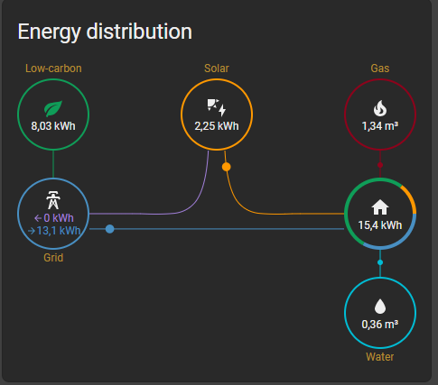
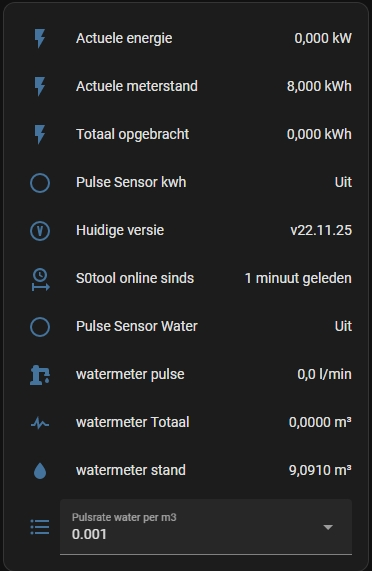
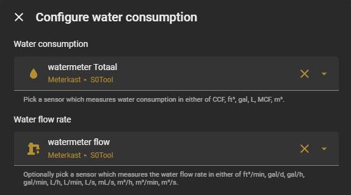
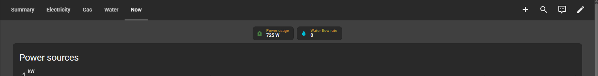
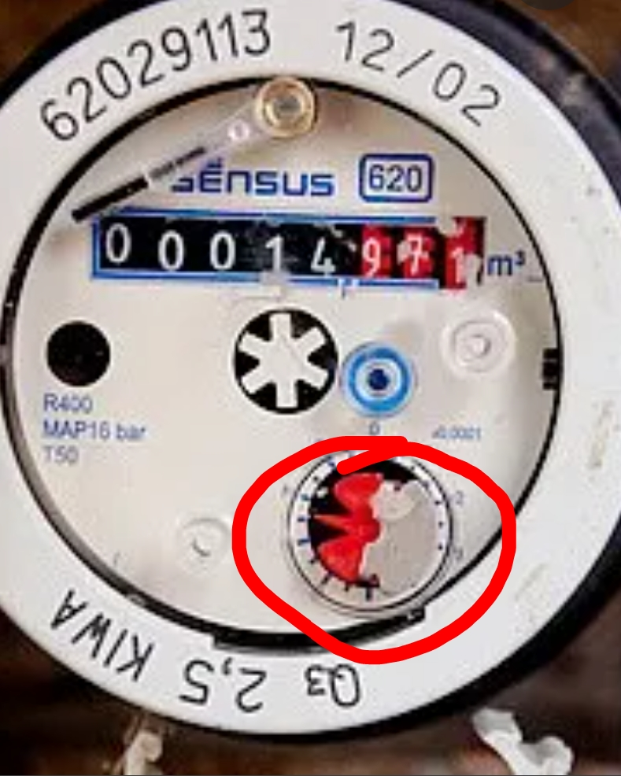

Troubleshooting
Find solutions to common S0tool issues. For additional help, check the GitHub README.
Updating via ESPHome
- Open the ESPHome add-on in Home Assistant.
- Locate your S0tool device and click the three dots menu.
- Select Validate, then click Install.
USB Drivers
Before flashing S0tool for the first time, install the correct USB-to-serial driver for your board's chip. Use
Device Manager (Windows) or dmesg (Linux/macOS) to identify the chip.
| Chip | Common Board | OS | Driver / Notes |
|---|---|---|---|
| CP2102 | Wemos D1 Mini, some NodeMCU | Win / Mac / Linux | Silicon Labs VCP Driver |
| CH340 | Common clone boards, most cheap ESP8266 | Win / Mac | sparks.gogo.co.nz — Linux has built-in support |
| CH341 | Older NodeMCU devkits | Win / Mac | NodeMCU GitHub |
| FTDI FT232 | Some dev boards & USB adapters | Win / Mac / Linux | FTDI VCP Drivers |
macOS 12+: Silicon Labs and FTDI drivers may require manual approval in System Settings → Privacy & Security after installation.
Linux: CH340/CH341 are usually plug-and-play. If not recognized, install
linux-modules-extra-$(uname -r) or add yourself to the dialout group:
sudo usermod -aG dialout $USER
Windows: Open Device Manager → look under Ports (COM & LPT) when the board is
plugged in. The chip name appears in parentheses. macOS/Linux: Run Visual inspection: The chip is usually a small black IC near the USB connector. Look for
markings like CP2102, CH340G, or FT232. How do I identify which chip my board uses?
dmesg | tail -20 after plugging in. Look for lines like
usb: cp210x converter or ch341-uart.
Energy Dashboard
Since Home Assistant 2022.11, you can add your S0tool data to the Energy Dashboard (S0tool v3.0+).



Water consumption
- Search for
watermeter Totaaland add it under Water consumption.
Water flow New in v3.6.9New in HA 2026.3.0
- Since S0tool v3.6.9, add the water flow sensor to the dashboard.
- Search for
watermeter flowand add it under Water flow (Waterdoorstroom). - If Home Assistant shows a unit warning, choose "Change historical values from 'l/min' to 'L/min' without conversion" and click Repair.


L/min on the Nu tab
of the Energy Dashboard — useful for detecting leaks or high usage.
S0 port (kWh / solar)
- Search for
Totaal opgebrachtand add it under the relevant energy category. - Search for
Actuele energieand add it under the relevant energy category.
Individual electrical devices
- If using the S0tool S0 port for another purpose, you can add individual electrical devices to the Energy Dashboard.
- Search for
Totaal opgebrachtandActuele energieunder the relevant energy category.

Changing Total Readings
 Water Counter — D2
Water Counter — D2- S0
Port / kWh — D5
-
Calibration service call
Compatible Water Meters
| Brand | Model | Type | Status | Region | Notes |
|---|---|---|---|---|---|
| Elster | V200 | 💧 Water | Compatible | NL | |
| Itron | Aquadis+ | 💧 Water | Compatible | NL | |
| Sensus | 620 | 💧 Water | Compatible | NL | |
| Maddalena | CD SD Plus | 💧 Water | Compatible | BE | |
| Actaris | Single-Jet | 💧 Water | Compatible | NL | |
| Zenner | MNK-RP-N | 💧 Water | Compatible | DE | |
| Kamstrup | Multical 21 | 💧 Water | Compatible | EU | |
| Diehl | Hydrus | 💧 Water | Compatible | EU |
Know a compatible meter? Add it via Community →

Advanced & Problems
S0tool is configurable in the ESPHome dashboard.
Submit a Pull Request or open an Issue. More info (Dutch) at huizebruin.nl.
⚙️ Configuration & Troubleshooting
Automatic Update Notifications & Sensors
Include this package in configuration.yaml:
homeassistant:
packages: !include_dir_merge_named packages/Use the following YAML package for S0tool sensors and update checks.
Copy it directly to
packages/s0tool.yaml in Home Assistant config folder.
# s0tool_package:
#------------------------# S0tool Template Sensors #------------------------#
# Convert watt to kW
template:
- sensor:
- name: "current_energy_output"
state: "{{ (states('sensor.actual_energy') | int / 1000) | round(2) }}"
icon: mdi:flash
unit_of_measurement: "kW"
unique_id: s0tool_W_to_kW
# Convert cubic meters to liters
- sensor:
- name: "water_consumption_liters_s0tool"
unique_id: s0tool_water_liters
state: "{{ (states('sensor.watermeter_total') | float * 1000) | int }}"
unit_of_measurement: L
icon: mdi:water
- sensor:
- name: "Water Meter Reading"
unique_id: water_meter_running_total
state_class: total_increasing
unit_of_measurement: m³
device_class: water
icon: mdi:gauge
state: "{{ 428.730 + states.sensor.watermeter_total.state | float }}"
# Binary sensor for S0tool updates
- binary_sensor:
- name: "S0tool Update Available"
unique_id: s0tool_up_to_date
state: >
{% set a = states('sensor.s0tool_version_github') %}
{% set b = states('sensor.s0tool_version') %}
{{ version(a) > version(b) }}
device_class: update
# REST sensor to fetch latest GitHub release
sensor:
- platform: rest
resource: https://api.github.com/repos/huizebruin/s0tool/releases/latest
name: s0tool_version_github
unique_id: s0tool_github_version
value_template: '{{ value_json.tag_name }}'
scan_interval: 3600
Automation Blueprint
Import this blueprint to get notified of new S0tool versions: